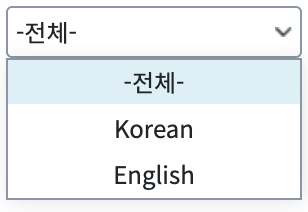
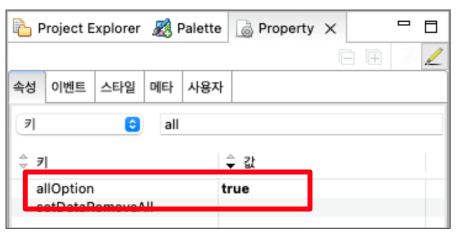

SelectBox의 속성 allOption 속성을 사용해 전체 메뉴를 추가하는 예제입니다. allOption은 전체 항목 표시 여부를 결정하는 속성입니다. label은 "-전체-"로, value는 "all"로 설정됩니다.
SelectBox의 allOption 적용하기
allOption을 설정해 "-전체-" 메뉴가 표시됨을 확인합니다.
그림 1.[브라우저 실행 예제]

그림 2.[브라우저 실행 예제]
그림 3.웹스퀘어5 SP5 스튜디오의 Property View(속성 창) 예시

[Property] allOption : 전체 메뉴를 표시할지 여부를 설정합니다.
[소스 코드 예시]
<xf:select1 ... allOption="true" ...>
<!-- 중략 -->
</xf:select1>allOption